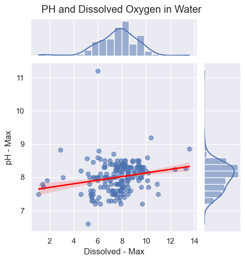
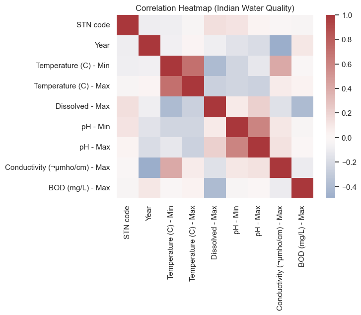
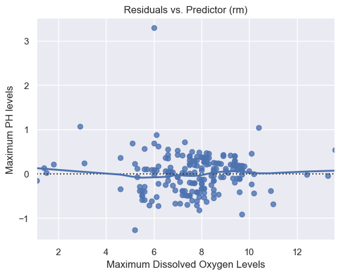

import pandas as pd
import matplotlib.pyplot as plt
import seaborn as sns
import matplotlib.pyplot as plt
import statsmodels.api as sm
import plotly.express as px
import plotly.io as pio
pio.renderers.default = 'plotly_mimetype+notebook_connected'
sns.set_theme()Week 10 Assignment
Set up and Data Import
The data I have chosen to use is from my Week 6 Assignment and it is Indian Water Quality from Kaggle.
IWQ_data = pd.read_csv("India_Water.csv")
IWQ_data.head(10)| STN code | Monitoring Location | Year | Type Water Body | State Name | Temperature (C) - Min | Temperature (C) - Max | Dissolved - Min | Dissolved - Max | pH - Min | ... | BOD (mg/L) - Min | BOD (mg/L) - Max | NitrateN (mg/L) - Min | NitrateN (mg/L) - Max | Fecal Coliform (MPN/100ml) - Min | Fecal Coliform (MPN/100ml) - Max | Total Coliform (MPN/100ml) - Min | Total Coliform (MPN/100ml) - Max | Fecal - Min | Fecal - Max | |
|---|---|---|---|---|---|---|---|---|---|---|---|---|---|---|---|---|---|---|---|---|---|
| 0 | 4085 | RIVER JUMAR AT BIT MESRA, RANCHI | 2022 | RIVER | JHARKHAND | 12.0 | 29.0 | 3.3 | 5.2 | 6.5 | ... | 2 | 2.9 | NaN | NaN | NaN | NaN | NaN | NaN | NaN | NaN |
| 1 | 2396 | RIVER JUMAR AT KANKE DAM | 2022 | RIVER | JHARKHAND | 12.0 | 26.0 | 5.9 | 7.2 | 7.5 | ... | 1.9 | 3.2 | NaN | NaN | NaN | NaN | NaN | NaN | NaN | NaN |
| 2 | 2401 | RIVER AJAY AT MASANJORE DAM | 2022 | RIVER | JHARKHAND | 17.0 | 36.0 | 5.8 | 6.6 | 7.5 | ... | 1.3 | 1.6 | NaN | NaN | NaN | NaN | NaN | NaN | NaN | NaN |
| 3 | 3554 | RIVER KONAR NEAR SWANG COAL WASHERY, BOKARO | 2022 | RIVER | JHARKHAND | 19.0 | 34.0 | 7.4 | 7.8 | 7.3 | ... | 1.8 | 2.7 | NaN | NaN | NaN | NaN | NaN | NaN | NaN | NaN |
| 4 | 2390 | RIVER KONAR AT TENUGHAT DAM | 2022 | RIVER | JHARKHAND | 16.0 | 33.0 | 7.4 | 8.0 | 7.4 | ... | 1.3 | 2.0 | NaN | NaN | NaN | NaN | NaN | NaN | NaN | NaN |
| 5 | 4000 | RIVER GARGA NEAR TELMUCHO BRIDGE | 2022 | RIVER | JHARKHAND | 15.0 | 30.0 | 6.5 | 7.5 | 7.2 | ... | 2.2 | 3.6 | NaN | NaN | NaN | NaN | NaN | NaN | NaN | NaN |
| 6 | 2381 | RIVER BOKARO AT ZARANGDIH BRIDGE | 2022 | RIVER | JHARKHAND | 18.5 | 33.5 | 7.3 | 8.1 | 7.0 | ... | 1.6 | 2.8 | NaN | NaN | NaN | NaN | NaN | NaN | NaN | NaN |
| 7 | 1034 | RIVER SANKH AT BOLBA, JHARKHAND | 2022 | RIVER | JHARKHAND | 12.0 | 27.0 | 7.8 | 8.5 | 7.3 | ... | 1.1 | 1.8 | NaN | NaN | NaN | NaN | NaN | NaN | NaN | NaN |
| 8 | 2392 | RIVER BARAKAR AT MAITHAN DAM | 2022 | RIVER | JHARKHAND | 13.0 | 26.0 | 7.3 | 7.8 | 7.4 | ... | 1.3 | 2.3 | NaN | NaN | NaN | NaN | NaN | NaN | NaN | NaN |
| 9 | 3555 | RIVER DAMODAR NEAR ZARANGDIH BRIDGE, BOKARO | 2022 | RIVER | JHARKHAND | 18.0 | 33.0 | 7.5 | 8.7 | 7.4 | ... | 1.8 | 2.7 | NaN | NaN | NaN | NaN | NaN | NaN | NaN | NaN |
10 rows × 23 columns
IWQ_drop = ['NitrateN (mg/L) - Min', 'NitrateN (mg/L) - Max', 'Fecal Coliform (MPN/100ml) - Min',
'Fecal Coliform (MPN/100ml) - Min', 'Fecal Coliform (MPN/100ml) - Max', 'Monitoring Location',
'Total Coliform (MPN/100ml) - Min', 'Total Coliform (MPN/100ml) - Max', 'Fecal - Min',
'Fecal - Max']
IWQ_clean = IWQ_data.drop(columns=IWQ_drop)
IWQ_clean.head(10)| STN code | Year | Type Water Body | State Name | Temperature (C) - Min | Temperature (C) - Max | Dissolved - Min | Dissolved - Max | pH - Min | pH - Max | Conductivity (µmho/cm) - Min | Conductivity (µmho/cm) - Max | BOD (mg/L) - Min | BOD (mg/L) - Max | |
|---|---|---|---|---|---|---|---|---|---|---|---|---|---|---|
| 0 | 4085 | 2022 | RIVER | JHARKHAND | 12.0 | 29.0 | 3.3 | 5.2 | 6.5 | 6.6 | NaN | NaN | 2 | 2.9 |
| 1 | 2396 | 2022 | RIVER | JHARKHAND | 12.0 | 26.0 | 5.9 | 7.2 | 7.5 | 7.6 | NaN | NaN | 1.9 | 3.2 |
| 2 | 2401 | 2022 | RIVER | JHARKHAND | 17.0 | 36.0 | 5.8 | 6.6 | 7.5 | 7.8 | 94 | 318.0 | 1.3 | 1.6 |
| 3 | 3554 | 2022 | RIVER | JHARKHAND | 19.0 | 34.0 | 7.4 | 7.8 | 7.3 | 7.6 | NaN | NaN | 1.8 | 2.7 |
| 4 | 2390 | 2022 | RIVER | JHARKHAND | 16.0 | 33.0 | 7.4 | 8.0 | 7.4 | 7.8 | NaN | NaN | 1.3 | 2.0 |
| 5 | 4000 | 2022 | RIVER | JHARKHAND | 15.0 | 30.0 | 6.5 | 7.5 | 7.2 | 7.5 | NaN | NaN | 2.2 | 3.6 |
| 6 | 2381 | 2022 | RIVER | JHARKHAND | 18.5 | 33.5 | 7.3 | 8.1 | 7.0 | 7.6 | NaN | NaN | 1.6 | 2.8 |
| 7 | 1034 | 2022 | RIVER | JHARKHAND | 12.0 | 27.0 | 7.8 | 8.5 | 7.3 | 7.5 | NaN | NaN | 1.1 | 1.8 |
| 8 | 2392 | 2022 | RIVER | JHARKHAND | 13.0 | 26.0 | 7.3 | 7.8 | 7.4 | 7.6 | NaN | NaN | 1.3 | 2.3 |
| 9 | 3555 | 2022 | RIVER | JHARKHAND | 18.0 | 33.0 | 7.5 | 8.7 | 7.4 | 7.6 | NaN | NaN | 1.8 | 2.7 |
Scatterplot
g = sns.jointplot(
data=IWQ_clean, x="Dissolved - Max", y="pH - Max",
kind="reg", height=5, ratio=4, space=0.2,
joint_kws={"line_kws": {"linewidth":2, "color": "red"}, "scatter_kws": {"alpha":0.6}, 'ci': 80},
# joint_kws={"line_kws": {"linewidth":2}, "scatter_kws": {"alpha":0.6}, 'ci': 95}
)
g.fig.suptitle("PH and Dissolved Oxygen in Water", y=1.02)Text(0.5, 1.02, 'PH and Dissolved Oxygen in Water')
Correlation Matrix Heatmap
corr = IWQ_clean.corr(numeric_only=True)
sns.heatmap(corr, annot=False, cmap="vlag", center=0)
plt.title("Correlation Heatmap (Indian Water Quality)")
plt.show()
Residual Plot
sns.residplot(x=IWQ_clean["Dissolved - Max"], y=IWQ_clean["pH - Max"], lowess=True)
plt.title("Residuals vs. Predictor (rm)")
plt.xlabel("Maximum Dissolved Oxygen Levels")
plt.ylabel("Maximum PH levels")
plt.show()
Interpretation
High dissolved oxygen is good for water quality and a medium level of pH (6.5-8.5) is good for water quality as well. Based upon the levels I observed in the data I expected to see a positive correlation between the two, especially since I am using the maximum values for both measures. Based on my scatterplot my hypothesis seems accurate but the slope of the regression line is relatively flat. This means that the correlation is likely weak and it is confirmed in the correlation heat map. The correlation value for the two variables seems to fall between 0 and 0.2 which would indicate a very weak association. We can see in the scatterplot as well that the data itself does not seem to follow a very clear pattern and much of the data is clustered around the center of the plot. I did some external research and it seems that there is not strong evidence that pH and dissolved oxygen are correlated which is what I found in my analysis. My residual plot also seems to be in line with my findings that if there is a correlation it is very weak as the points are still scattered among the line. As such my hypothesis that there is an association may seem correct based on the slight upward slope of the regression line, but upon further analysis the association may be too weak to predict values.